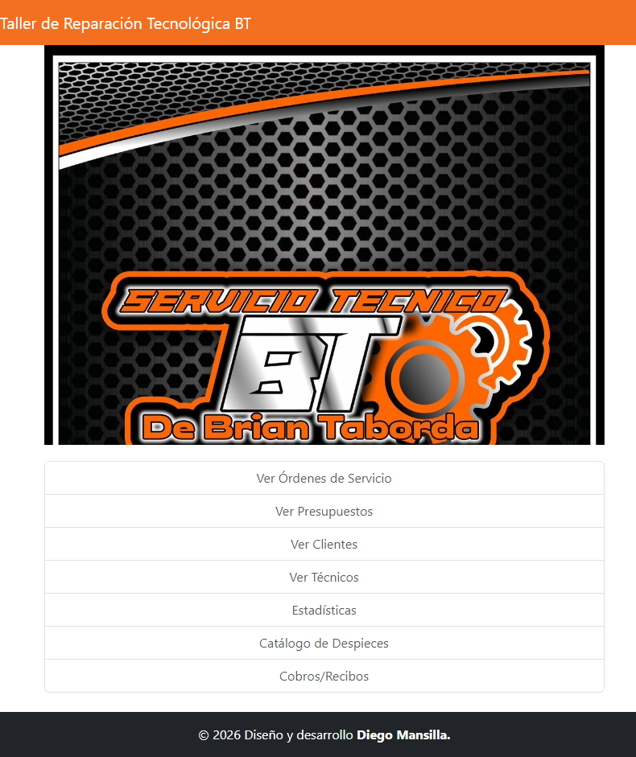
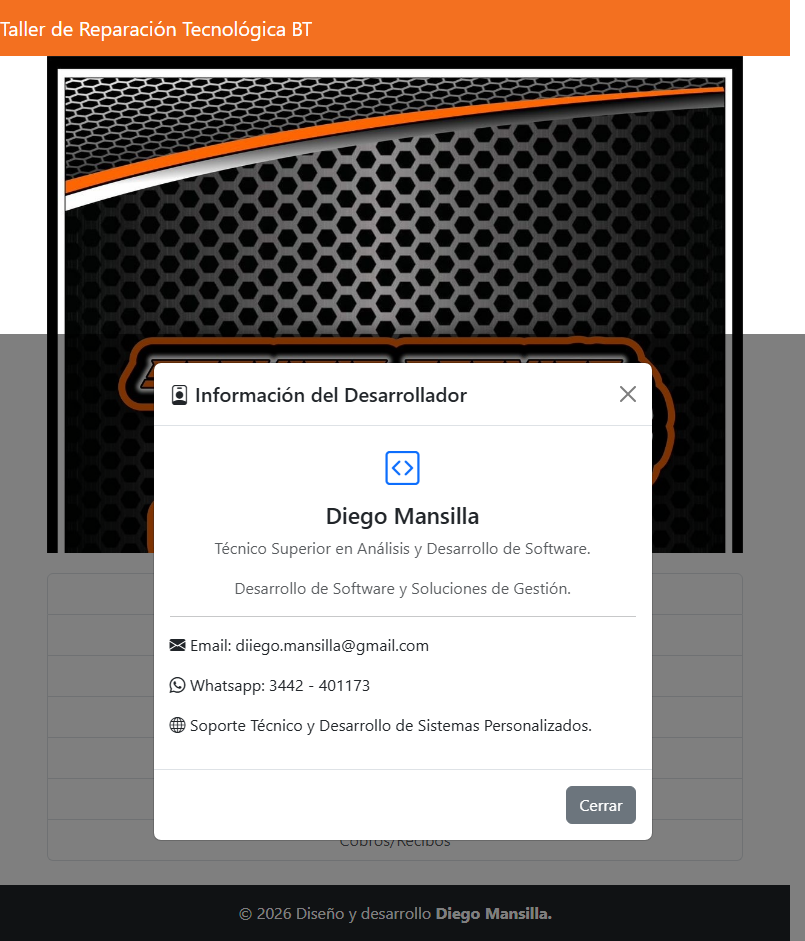
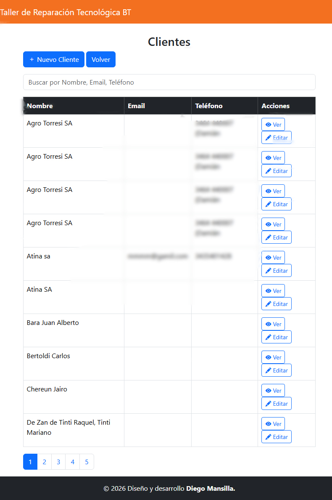
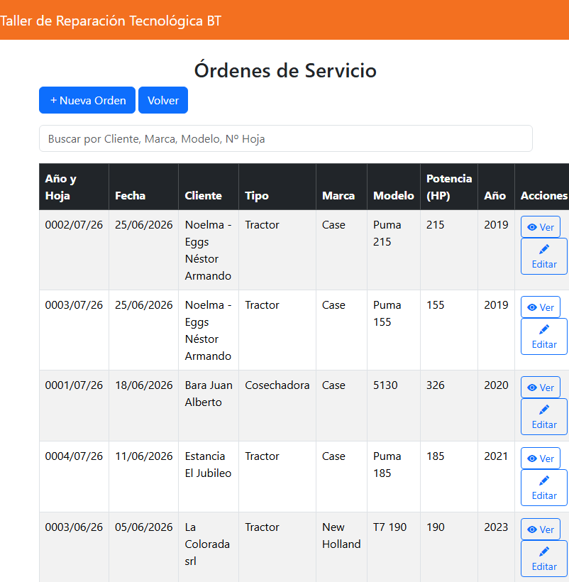
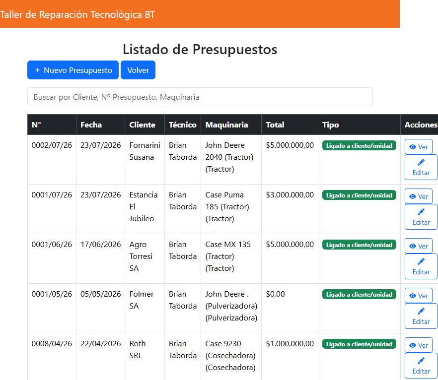

Clientes
Registro y administración de la información de los clientes.
Una solución desarrollada para centralizar la información, organizar los trabajos y facilitar la gestión diaria.

El sistema puede adaptarse a los procesos y necesidades particulares de cada negocio, permitiendo definir qué información gestionar y como organizarla.
Estas son algunas de las herramientas que pueden formar parte de una solución de gestión para un taller.
Registro y administración de la información de los clientes.
Organización de trabajos, tareas y servicios realizados.
Elaboración y seguimiento de presupuestos para cada trabajo.
Gestión de repuestos y elementos utilizados durante los trabajos.
Información organizada para conocer el estado de cada trabajo.
Registro de trabajos y antecedentes para consultar la información cuando sea necesario.
Algunas pantallas del sistema actualmente desarrollado.

Una vista general para acceder rápidamente a las principales herramientas del sistema.

Información centralizada y organizada para facilitar la administración de los clientes.

Organización de los trabajos realizados y seguimiento de cada servicio.

Preparación y administración de presupuestos asociados a los trabajos.
Las herramientas mostradas representan una base de funcionalidades ya desarrolladas.
A partir de esta referencia se pueden analizar los procesos particulares de cada taller y definir los requerimientos necesarios para construir una solución adaptada a su forma de trabajo.
Podemos tomar esta base como punto de partida, analizar los procesos del taller y definir juntos las funcionalidades que necesita el proyecto.
Contactar